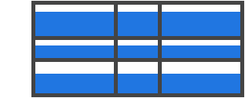
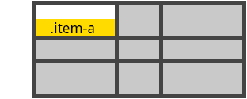

Полное руководство по CSS Grid
Перевод
Автор оригинала
Chris House
Оригинал
CSS Grid Layout - самая мощная система компоновки из доступных на данный момент в CSS. Это двумерная система, которая может обрабатывать как колонки так и строки, в отличии от Flexbox, который в значительной степени является одномерной системой. При работе с CSS Grid, вы применяете CSS правила и родительским элементам (которые становятся Grid контейнерами) и к дочерним элементам (которые становятся Grid элементами).
CSS Grid Layout (aka "Grid") - это двумерная система компоновки основанная на сетке, цель которой заключается в том чтобы полностью изменить способ проектирования пользовательских интерфейсов основанных на сетке. CSS всегда использовался для разметки веб-страниц, но никогда не делал эту работу хорошо. Сначала мы использовали таблицы, потом обтекания (floats), позиционирование и инлайновые блоки (inline-block), но все эти методы по существу являются просто хаками и опускают много важных функциональных возможностей (например, вертикальное выравнивание). Flexbox помог, но он предназначен для более простых одномерных макетов, а не для сложных двумерных (на самом деле Flexbox и Grid очень хорошо работают вместе). CSS Grid'ы - это первый модуль созданный специально для решения проблем компоновки, которые до сих пор мы решали с помощью хаков при создании сайтов. Есть две основные вещи, которые вдохновили меня на создание этого руководства. Первое, это замечательная книга от Rachel Andrew's Get Ready for CSS Grid Layout. Это подробное и понятное введение в CSS Grid'ы, которое является основой для всей этой статьи. Я настоятельно рекомендую купить и прочитать его. Вторая вещь, которая меня вдохновила - это A Complete Guide to Flexbox (Полное руководство по Flexbox) от Chris Coyier's, которая стала моим основным ресурсом по Flexbox. Она помогла большому количеству людей, о этом свидетельствует тот факт, что это лучший результат в поисковой выдаче при запросе"Flexbox" в Google. Вы увидите много похожего между этой статьей и моей, потому что почему бы не украсть у лучших?
Моя цель в этом руководстве - это возможность представить вам концепции CSS Grid'ов так как они существуют в самой последней версии спецификации. Поэтому я не буду освещать устаревший синтаксис для IE и сделаю всё возможное, чтобы это руководство регулярно обновлялось, по мере изменения спецификации.
Для того чтобы начать работу, нам нужно определить элемент-контейнер с помощью display: grid, настроить размеры колонок и строк с помощью grid-template-columns и grid-template-rows, а также разместить его дочерние элементы внутри сетки с помощью grid-column и grid-row. Так же как и во Flexbox, порядок элементов в источнике сетки, не имеет значения (прим. переводчика: в HTML разметке). Ваш CSS может размещать их в любом порядке, что собственно упрощает перегруппировку сетки с помощью медиа запросов. Представьте, что вы определяете разметку всей страницы, а затем полностью переставляете её, чтобы разместить элементы под другую ширину экрана всего лишь с помощью нескольких CSS строк кода. CSS Grid - это один из самых мощных CSS модулей, представленных когда-либо. По состоянию на март 2017 года, многие браузеры уже поддерживают CSS Grid, без префиксов: Chrome (включая Android), Firefox, Safari (включая iOS), и Opera. Internet Explorer 10 и 11 поддерживают его но с реализацией более старого синтаксиса. Была анонсирована поддержка в Edge, но её пока нет.
CSS Grid Layout (level 1)
IE
9
10
11
Edge
88
89
90
Firefox
85
86
87
88
89
Chrome
88
89
90
91
92
Safari
13
13.1
14
TP
Safari on iOS
13.3
13.4-13.7
14.0-14.5
Chrome for Android
89
Полная поддержка
Частичная поддержка
С префиксом
Не поддерживается
Данные с сервиса caniuse.com
Помимо Microsoft, производители браузеров по всей видимости придерживают запуск CSS Grid'ов в свободное плавание, пока спецификация не будет полностью готова. И это хорошо, потому что нам не придется заботится об изучении нескольких синтаксисов.
Это всего лишь вопрос времени, когда вы сможете использовать Grid'ы в продакшене. Но самое время, чтобы узнать о нём побольше.
Перед тем как мы погрузимся в концепцию Grid'ов, важно понимать её терминологию. Так как используемые здесь термины концептуально похожи, их довольно легко перепутать друг с другом, если с самого начала не запомнить их значения, определённые в спецификации. Не волнуйтесь их не так много.
Элемент к которому применяется display: grid. Это прямой родитель для всех элементов сетки. В этом примере container является контейнером.
<div class="container">
<div class="item item-1"></div>
<div class="item item-2"></div>
<div class="item item-3"></div>
</div>
Дочерние элементы (прямые потомки) контейнера. Здесь item это элемент сетки, но не sub-item.
<div class="container">
<div class="item"></div>
<div class="item">
<p class="sub-item"></p>
</div>
<div class="item"></div>
</div>
Разделительные линии, составляющие структуру для сетки. Они могут быть вертикальными ("линии колонок") или горизонтальными ("линии строк") и располагаться по обе стороны от строки или столбца. На изображении жёлтая линия является примером вертикальной линии (линией колонки).
Пространство между двумя соседними линиями. Вы можете думать об этом как о столбцах или строках сетки. Вот трек между второй и третьей линией строк.
Пространство между линиями двух соседних строк и двух соседних столбцов. Это отдельная "единица измерения" сетки. Вот пример ячейки между линиями строк 1 и 2, линиями колонок 2 и 3.
Общее пространство окружённое четырьмя линиями. Область может состоять из любого количества ячеек. Вот пример области между строками 1 и 3, и колонками 1 и 3.
Свойства для контейнера
Свойства для элементов
Свойства для родительского элемента (Контейнера сетки)
Определяет элемент как контейнер и устанавливает новый контекст форматирования сетки для его содержимого.
Значения:
.container {
display: grid | inline-grid | subgrid;
}
Обратите внимание на то, что column, float, clear и vertical-align не дадут никакого эффекта на контейнере.
grid-template-columns grid-tempate-rows
Определяет колонки и строки сетки с помощью списка значений разделённого пробелами. Значения представляют из себя размер трека, а пробелы между ними представляют линии сетки.
Значения:
.container {
grid-template-columns: <track-size> ... | <line-name> <track-size> ...;
grid-template-rows: <track-size> ... | <line-name> <track-size> ...;
}
Примеры:
Когда вы оставляете пустое пространство между значениями треков, линиям сетки автоматически присваиваются числовые имена:
.container{
grid-template-columns: 40px 50px auto 50px 40px;
grid-template-rows: 25% 100px auto;
}
Но вы можете называть линии явно. Обратите внимание на синтаксис для их названия:
.container {
grid-template-columns: [first] 40px [line2] 50px [line3] auto [col4-start] 50px [five] 40px [end];
grid-template-rows: [row1-start] 25% [row1-end] 100px [third-line] auto [last-line];
}
Обратите внимание на то что у линии может быть несколько названий. Например, здесь у второй линии будет два названия: row1-end и row2-start:
.container{
grid-template-rows: [row1-start] 25% [row1-end row2-start] 25% [row2-end];
}
Если в вашем определении содержатся повторяющиеся части, то можно использовать нотацию repeat():
.container {
grid-template-columns: repeat(3, 20px [col-start]) 5%;
}
Тоже самое что и:
.container {
grid-template-columns: 20px [col-start] 20px [col-start] 20px [col-start] 5%;
}
Единица fr позволяет вам настраивать размер треков как часть свободного пространства в контейнере. Вот пример, который устанавливает каждому элементу одну третью ширины контейнера.
.container {
grid-template-columns: 1fr 1fr 1fr;
}
Свободное пространство высчитывается после вычисления всех фиксированных элементов. В этом примере, общее количество свободного пространства для единиц fr не будет включать в себя 50px.
Определяет шаблон сетки ссылаясь на имена областей, которые заданы с помощью свойства grid-area. Повторение названия области приводит к тому, что содержимое охватывает эти ячейки. Точка означает пустую ячейку. Сам синтаксис предоставляет визуализацию структуры сетки.
Значения:
.container {
grid-template-areas:
"<grid-area-name> | . | none | ..."
"...";
}
Пример:
.item-a {
grid-area: header;
}
.item-b {
grid-area: main;
}
.item-c {
grid-area: sidebar;
}
.item-d {
grid-area: footer;
}
.container {
grid-template-columns: 50px 50px 50px 50px;
grid-template-rows: auto;
grid-template-areas:
"header header header header"
"main main . sidebar"
"footer footer footer footer";
}
Пример выше создаст сетку из 4 колонок и 3 строк. Вся верхняя строка будет состоять из области header. Строка по середине будет состоять из области main, занимающей две колонки, пустой ячейки и области sidebar, которая занимает одну колонку. Последняя строка будет состоять только из области footer.
У каждой строки должно быть одинаковое количество ячеек. Вы можете использовать любое количество примыкающих точек для объявления пустых ячеек. Пока между точками нет пробелов, они представляют одну ячейку.
Обратите внимание на то, что вы никак не называете линии, только области. Когда вы используете такой синтаксис, линии на обоих концах областей будут именоваться автоматически. Если ваша область называется foo, то название первых линий для строк и столбцов будет foo-start, а название для последних линий строк и столбцов будет foo-end. Это означает, что у некоторых линий может быть несколько имён, как нашем случае, у самой левой линии будет три названия: header-start, main-start, и footer-start.
Сокращение для grid-template-rows, grid-template-columns, и grid-template-areas.
Значения:
.container {
grid-template: none | subgrid | <grid-template-rows> / <grid-template-columns>;
}
Он также принимает более сложный, но довольно удобный синтаксис, для указания всех трёх свойств. Вот пример:
.container {
grid-template:
[row1-start] 25px "header header header" [row1-end]
[row2-start] "footer footer footer" 25px [row2-end]
/ auto 50px auto;
}
Что эквивалентно следующему:
.container {
grid-template-rows: [row1-start] 25px [row1-end row2-start] 25px [row2-end];
grid-template-columns: auto 50px auto;
grid-template-areas:
"header header header"
"footer footer footer";
}
Так как grid-template не сбрасывает неявные свойства (grid-auto-columns, grid-auto-rows, и grid-auto-flow), а в большинстве случаев, вероятно, вы бы захотели это сделать, рекомендуется использовать свойство grid, вместо grid-template.
# grid-column-gap grid-row-gap
Определяет размер ширины линий. Вы можете думать об этом, как о настройке ширины отступов между столбцами и строками.
Значения:
.container {
grid-column-gap: <line-size>;
grid-row-gap: <line-size>;
}
Пример:
.container {
grid-template-columns: 100px 50px 100px;
grid-template-rows: 80px auto 80px;
grid-column-gap: 10px;
grid-row-gap: 15px;
}
Отступы создаются только между колонками и строками, но не для внешних краев сетки.
Сокращение для grid-row-gap и grid-column-gap.
Значение:
.container {
grid-gap: <grid-row-gap> <grid-column-gap>;
}
Пример:
.container{
grid-template-columns: 100px 50px 100px;
grid-template-rows: 80px auto 80px;
grid-gap: 10px 15px;
}
Если значение для grid-row-gap не задано, ему присваивается такое же значение как и у grid-column-gap.
Выравнивает содержимое вдоль оси строки (в отличии от align-items который выравнивает элементы вдоль оси столбца). Это значение применяется ко всем элементам сетки внутри контейнера.
Значения:
.container {
justify-items: start | end | center | stretch;
}
Примеры:
.container {
justify-items: start;
}
.container{
justify-items: end;
}
.container{
justify-items: center;
}
.container{
justify-items: stretch;
}
Выравнивает содержимое вдоль оси столбца (в отличии от justify-items который выравнивает элементы вдоль оси строки). Это значение применяется ко всем элементам сетки внутри контейнера.
Значения:
.container {
align-items: start | end | center | stretch;
}
Примеры:
.container {
align-items: start;
}
.container {
align-items: end;
}
.container {
align-items: center;
}
.container {
align-items: stretch;
}
Иногда общий размер сетки может быть меньше размера контейнера. Такое может случится если у всех элементов сетки заданы фиксированные единицы измерения, например px. В таком случае можно установить выравнивание сетки внутри контейнера. Это свойство выравнивает сетку вдоль оси строки (в отличии от свойства align-content, которое выравнивает сетку вдоль оси столбца).
Значения:
.container {
justify-content: start | end | center | stretch | space-around | space-between | space-evenly;
}
Примеры:
.container {
justify-content: start;
}
.container {
justify-content: end;
}
.container {
justify-content: center;
}
.container {
justify-content: stretch;
}
.container {
justify-content: space-around;
}
.container {
justify-content: space-between;
}
.container {
justify-content: space-evenly;
}

Иногда общий размер сетки может быть меньше размера контейнера. Такое может случится если у всех элементов сетки зада фиксированные единицы измерения, например px. В таком случае можно установить выравнивание сетки внутри контейнера. Это свойство выравнивает сетку вдоль оси колонки (в отличии от свойства justify-content, которое выравнивает сетку вдоль оси строки).
Значения:
.container {
align-content: start | end | center | stretch | space-around | space-between | space-evenly;
}
Примеры:
.container {
align-content: start;
}
.container {
align-content: end;
}
.container {
align-content: center;
}
.container {
align-content: stretch;
}
.container {
align-content: space-around;
}
.container {
align-content: space-between;
}
.container {
align-content: space-evenly;
}
grid-auto-columns grid-auto-rows
Определяет размер любых автоматически созданных треков (иначе говоря, неявных треков). Неявные треки создаются при явном позиционировании столбцов и строк (через grid-template-rows/grid-template-columns), которые находятся за пределами заданной сетки.
Значения:
.container {
grid-auto-columns: <track-size> ...;
grid-auto-rows: <track-size> ...;
}
Чтобы проиллюстрировать то как создаются неявные треки, посмотрите на это:
Пример выше создаст сетку 2 x 2.
А теперь представьте, что вы позиционируете элементы сетки с помощью grid-column и grid-row следующим образом:
.item-a {
grid-column: 1 / 2;
grid-row: 2 / 3;
}
.item-b {
grid-column: 5 / 6;
grid-row: 2 / 3;
}
Мы сказали чтобы элемент .item-b начинался с 5 линии и заканчивался на 6 линии, по оси столбцов, но мы не определяли линии 5 и 6. Так как мы ссылаемся на не существующие линии, неявные треки с шириной 0 были созданы чтобы заполнить пробелы. Мы можем использовать grid-auto-columns и grid-auto-rows чтобы указать ширину этим неявным трекам:
.container {
grid-auto-columns: 60px;
}
Если у вас есть элементы, которые вы явно не позиционируете в сетке, запускается алгоритм авто-размещения, чтобы их автоматически разместить. Это свойство контролирует то как алгоритм авто-размещения работает.
Значения:
.container {
grid-auto-flow: row | column | row dense | column dense
}
Обратите внимание на то что dense может привести к тому, что ваши элементы будут отображаться не по порядку.
Примеры:
Рассмотрим следующий HTML:
<section class="container">
<div class="item-a">item-a</div>
<div class="item-b">item-b</div>
<div class="item-c">item-c</div>
<div class="item-d">item-d</div>
<div class="item-e">item-e</div>
</section>
Вы определили сетку с пятью колонками и двумя рядами, а свойство grid-auto-flow установили в row (оно же значение по умолчанию).
.container {
display: grid;
grid-template-columns: 60px 60px 60px 60px 60px;
grid-template-rows: 30px 30px;
grid-auto-flow: row;
}
При размещении элементов в сетке, вы указываете позиции только для двух из них:
.item-a {
grid-column: 1;
grid-row: 1 / 3;
}
.item-e {
grid-column: 5;
grid-row: 1 / 3;
}
Так как мы установили grid-auto-flow в row, наша сетка будет выглядеть как на изображении ниже. Обратите внимание на то, как три элемента которые мы не расположили (item-b, item-c и item-d) перетекают через пустые строки:
Если вместо этого мы установим свойство grid-auto-flow в column, элементы item-b, item-c and item-d будут перетекать сквозь колонки:
.container {
display: grid;
grid-template-columns: 60px 60px 60px 60px 60px;
grid-template-rows: 30px 30px;
grid-auto-flow: column;
}
Сокращение для настройки всех следующих свойств: grid-template-rows, grid-template-columns, grid-template-areas, grid-auto-rows, grid-auto-columns, и grid-auto-flow. Он также настраивает grid-column-gap и grid-row-gap на их начальные значения, даже если они не могут быть явно заданы этим свойством.
Значения:
.container {
grid: none | <grid-template-rows> / <grid-template-columns> | <grid-auto-flow> [<grid-auto-rows> [/ <grid-auto-columns>]];
}
Примеры:
Следующие два блока кода эквивалентны:
.container {
grid: 200px auto / 1fr auto 1fr;
}
.container {
grid-template-rows: 200px auto;
grid-template-columns: 1fr auto 1fr;
grid-template-areas: none;
}
И следующие два блока также эквивалентны:
.container {
grid: column 1fr / auto;
}
.container {
grid-auto-flow: column;
grid-auto-rows: 1fr;
grid-auto-columns: auto;
}
Он также принимает более сложный, но довольно удобный синтаксис для настройки всего и сразу. Вы указываете grid-template-areas, grid-template-rows и grid-template-columns, а все остальные свойства устанавливаются в начальные значения. Всё что вы делаете, это указываете имена строк и размеры треков в строке соответствующим областям сетки. Это проще всего описать на примере:
.container {
grid: [row1-start] "header header header" 1fr [row1-end]
[row2-start] "footer footer footer" 25px [row2-end]
/ auto 50px auto;
}
Это эквивалентно следующему:
.container {
grid-template-areas:
"header header header"
"footer footer footer";
grid-template-rows: [row1-start] 1fr [row1-end row2-start] 25px [row2-end];
grid-template-columns: auto 50px auto;
}
Свойства для дочерних элементов (Grid элементы)
grid-column-start grid-column-end grid-row-start grid-row-end
Определяют местоположение в сетке ссылаясь на конкретные линии. grid-column-start/grid-row-start - это линия с которой начинается элемент, а grid-column-end/grid-row-end - это линия на которой элемент заканчивается.
Значения:
.item {
grid-column-start: <number> | <name> | span <number> | span <name> | auto
grid-column-end: <number> | <name> | span <number> | span <name> | auto
grid-row-start: <number> | <name> | span <number> | span <name> | auto
grid-row-end: <number> | <name> | span <number> | span <name> | auto
}
Примеры:
.item-a {
grid-column-start: 2;
grid-column-end: five;
grid-row-start: row1-start
grid-row-end: 3
}
.item-b {
grid-column-start: 1;
grid-column-end: span col4-start;
grid-row-start: 2
grid-row-end: span 2
}
Если grid-column-end/grid-row-end не объявлены, элемент будет охватывать 1 трек по умолчанию.
Сокращение для grid-column-start + grid-column-end, и grid-row-start + grid-row-end, соответственно.
Значения:
.item {
grid-column: <start-line> / <end-line> | <start-line> / span <value>;
grid-row: <start-line> / <end-line> | <start-line> / span <value>;
}
Пример:
.item-c {
grid-column: 3 / span 2;
grid-row: third-line / 4;
}
Если значение конечной линии не указано, то элемент будет охватывать только 1 трек, по умолчанию.
Даёт название элементу чтобы можно было ссылаться на него с помощью шаблона созданного через grid-template-areas свойство. В качестве альтернативы, это свойство может быть использовано в качестве сокращения для grid-row-start + grid-column-start + grid-row-end + grid-column-end.
Значения:
.item {
grid-area: <name> | <row-start> / <column-start> / <row-end> / <column-end>;
}
Примеры:
Как способ назначить название элементу:
.item-d {
grid-area: header
}
Как сокращение для grid-row-start + grid-column-start + grid-row-end + grid-column-end:
.item-d {
grid-area: 1 / col4-start / last-line / 6
}
Выравнивает содержимое элемента вдоль оси строки (в отличии от align-self, который выравнивает вдоль оси столбца). Это значение применяется к содержимому внутри отдельного элемента.
Значения:
.item {
justify-self: start | end | center | stretch;
}
Примеры:
.item-a {
justify-self: start;
}
.item-a {
justify-self: end;
}
.item-a {
justify-self: center;
}
.item-a {
justify-self: stretch;
}
Выравнивает содержимое элемента вдоль оси столбца (в отличии от justify-self, который выравнивает вдоль оси строки). Это значение применяется к содержимому внутри отдельного элемента.
Значения:
.item {
align-self: start | end | center | stretch;
}
Примеры:
.item-a {
align-self: start;
}
.item-a {
align-self: end;
}
.item-a {
align-self: center;
}
.item-a {
align-self: stretch;
}
Поделиться в соц. сетях
20 июня 2017 18:27
Илья
Спасибо за перевод! Актуальный и хорошо структурированный материал. Но к сожалению, несмотря на громкий заголовок и стремление автора оригинала поддерживать свой труд в актуальном состоянии, некоторые моменты он всё же упустил (например, часто востребованную возможность делать количество столбцов динамическим с помощью repeat(auto-fill, ...)). Так что, на мой взгляд, стоит обратить внимание и на другие статьи, дополняющие этот материал, например, на css-live.ru (в т.ч. недавнюю «Большую статью про гриды»).
Администратор
И вам спасибо за отзыв!) А что касается repeat, то автор это не упустил, о нём говорится в разделе https://tuhub.ru/frontend/css-grid-complete-guide/#prop-grid-template-columns-rows
sergeylugovykh
Нет там про repeat(auto-fill, ...)) или я в упор не вижу, вместе с автором комментария выше
17 октября 2017 12:09
Олег Вячеславович
Дружище! Спасибо. Это лучшее в рунете по grid.
9 октября 2019 13:30
mazzzaj
И, всё таки... Насколько я понимаю в этом коде просто три колонки делят пространство на три части. При чём здесь 50px?!
.container {
grid-template-columns: 1fr 1fr 1fr;
}
mazzzaj
....ть ПОЧЕМУ?!?!
9 октября 2019 16:07
mazzzaj
И, всё таки... Насколько я понимаю в этом коде просто три колонки делят пространство на три части. При чём здесь 50px?!
.container {
grid-template-columns: 1fr 1fr 1fr;
}
17 апреля 2021 13:45
Димыч
Всё замечательно, только добавьте информацию о том как работают auto-fill и auto-fit